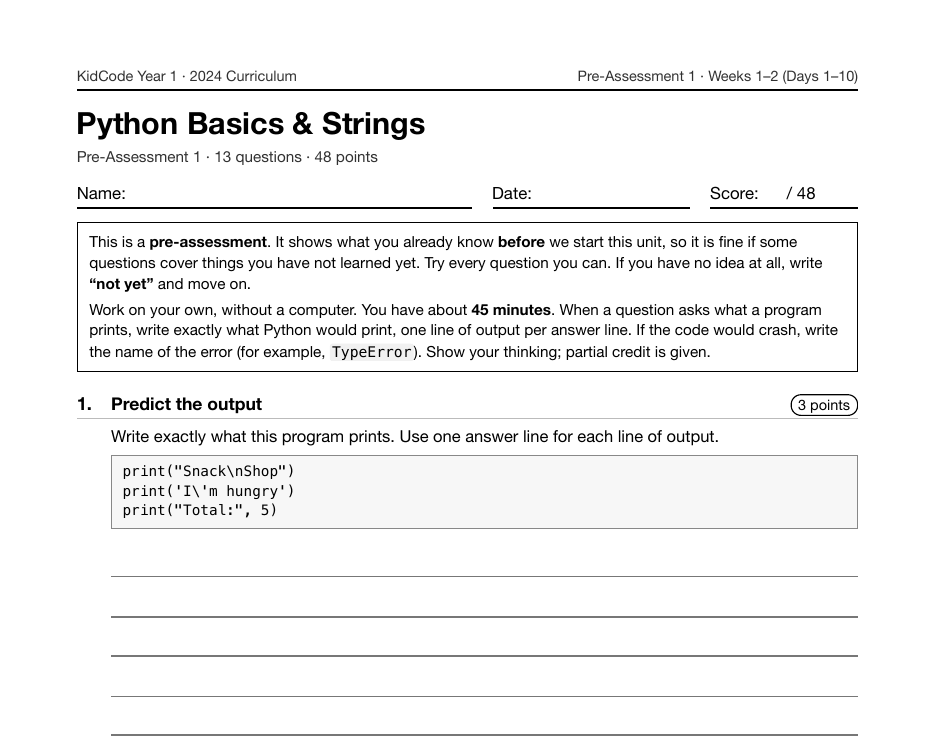

Project 1: Mad Libs Machine
Mad Libs Machine is the first complete program in KidCode. It comes on Day 6 of Year 1, after a week of print(), variables, arithmetic and input(), and it is the first time those pieces have to work together to make something another person would actually want to run.
What I taught that week
From the Year 1 curriculum, Week 2: Words As Data
Day 6: Lab: Mad Libs Machine. Project 1. Combining input(), variables, and f-strings into a complete program: a silly story with blanks that players fill in. Pair programming with driver and navigator roles.
Day 7: Strings: Beads on a String. Strings as ordered characters. Measuring with len(), joining with +, repeating with *, and picking characters with word[0] and word[-1]. Understanding IndexError. Practice: "Secret Initials".
Day 8: Slicing & Dicing Text. Slicing with [start:end] and reversing with [::-1]. Why strings are immutable, so new strings are built instead of edited. Practice: "Nickname Maker" and "Backwards Words".
Day 9: String Methods: Dot Magic. The idea of a method: an action that belongs to a piece of data, called with a dot. Using .upper(), .lower(), .title(), .strip(), .replace(), and .count(). Lab: "Text Cleaner".
Day 10: More Methods & Text Toolbox. Using .split(), .join(), .find(), .startswith(), and in. Lab: "Text Toolbox", which reports a sentence's length, word count, and shout and whisper versions.
What students built
29 students turned in a Mad Libs program, and they wrote 29 different stories between them: no two submissions share a theme. Every one of them builds the story with an f-string, and the median program asks the player for 7 words. The median program is 17 lines long, which is about right for a first project: short enough to finish in one class, long enough that the order of the lines matters.
One student's program
This is one real submission, shown as the student wrote it apart from the removed name header. It was chosen by a fixed rule rather than for being the best: it is the submission closest to the project's median length among those that ran cleanly and contain nothing that could identify anyone.
print("A Day at the Zoo")
print("Fill in the blanks and I will tell you a story!")
print()
animal1 = input("Give me an animal: ")
animal2 = input("Give me another animal: ")
adj1 = input("Give me an adjective: ")
verb1 = input("Give me a verb: ")
food = input("Give me a food: ")
teacher = input("Give me a teacher's name: ")
num = input("Give me a number: ")
print()
story = f"""
Our class visited the zoo with {teacher}.
The {adj1} {animal1} tried to {verb1} while the {animal2} stole my {food}.
We saw {num} more animals before the bus came back.
"""
print(story)
A sample run of that program (the input was typed for this page)
A Day at the Zoo Fill in the blanks and I will tell you a story! Give me an animal: penguin Give me another animal: giraffe Give me an adjective: sleepy Give me a verb: dance Give me a food: pancakes Give me a teacher's name: Professor Owl Give me a number: 12 Our class visited the zoo with Professor Owl. The sleepy penguin tried to dance while the giraffe stole my pancakes. We saw 12 more animals before the bus came back.
The worksheet for this unit
Each unit has a pre- and post-assessment written from the same curriculum. This is the first page of the pre-assessment for the unit this project sits in: Python Basics & Strings (Weeks 1–2 (Days 1–10), 13 questions).

Where it fits
Mad Libs comes back two years later. In Year 3, Auto Mad Libs hands the job of choosing the blanks to spaCy, which tags every word in a story with its part of speech. The Year 1 version is the baseline that makes the Year 3 version interesting.
Looking back
The thing this project teaches that a worksheet can't is sequence: every input() has to run before the story prints, and a student who puts the print first finds out immediately. It is also the first day of pair programming, with one student driving and one navigating, which is how most Year 1 labs ran afterward.